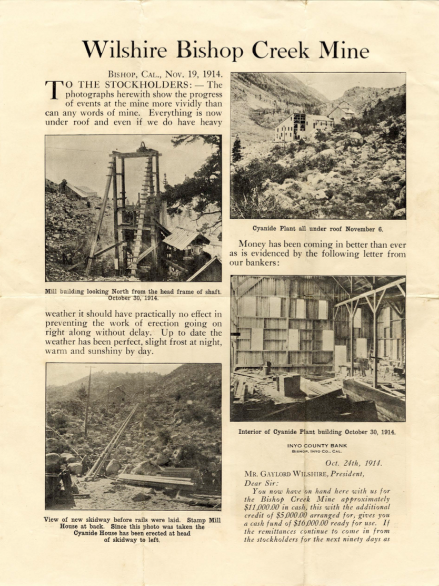

ROAD & WEATHER CONDITIONS
Highway 168 current road conditions (CA DOT):
Aspendell current weather & forecast (National Weather Service):
Avalanche information: avalanche.org
Bishop, CA 93514
To join our community mailing list, please email us at shareinfo@aspendell.org
10:00am: APOA annual meeting at Cardinal Village Resort "Lecture Hall" (pastries/coffee at 9:45am)
5:00pm: APOA BBQ & fundraiser on Columbine Drive along the creek (look for the banner!)
Volunteers needed for set up & raffle donations. Please contact Marilyn Bruner.
Add times, location information here
Please contact Scott (email?) to join.
Highway 168 current road conditions (CA DOT):
Aspendell current weather & forecast (National Weather Service):
Avalanche information: avalanche.org
The Aspendell South Fork Volunteer Fire Department (ASFVFD) is a 501c (3) non-profit charitable public benefit organization, organized as a California Corporation #C3603584. The ASFVFD organization is a local self supporting non governmental (NGO) successor to the Aspendell South Fork Residents Association (ASFRA) organized as an interim successor to the Aspendell Volunteer Fire Department, a former operation of the Aspendell Mutual Water Company (AMWC). The ASFVFD service statement is posted here.
For more information (volunteers, budget, recent news, etc.) please visit the ASFVFD website.
Recipes and tips for high-altitude cooking from The Spruce Eats
High altitude tips from Betty Crocker
High altitude cooking and baking by Mountain Mama Cooks
High altitude baking tips from Cook's Illustrated
Cabin moths information from Colorado State University: "Moths in the Home"
Miller moths facts from CSU Extension: "Miller moths"
Questions and answers about miller moths by Whitney Cranshaw and Frank Peairs
Parcher's Resort (South Fork Bishop Creek)
Bishop Creek Lodge (South Fork Bishop Creek)
Cardinal Village Resort (Aspendell)
All the Ins and Outs of Bishop Creek Camping from the Bishop Visitor Center
Inyo County fish planting schedule from CA Department of Fish & Wildlife
Dave's Sierra Fishing website
Fish Bishop Year-Round! from the Bishop Visitor Center
Aspendell (elev. 8400') is a small unicorporated community located 17 miles west of Bishop, CA in the Eastern Sierra Nevada.
Click on the image below to see the entire article on the Wilshire Mine in Aspendell (November 19, 1914):
Email: shareinfo@aspendell.org